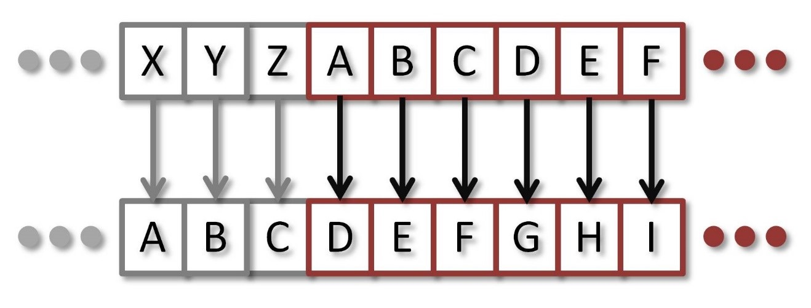
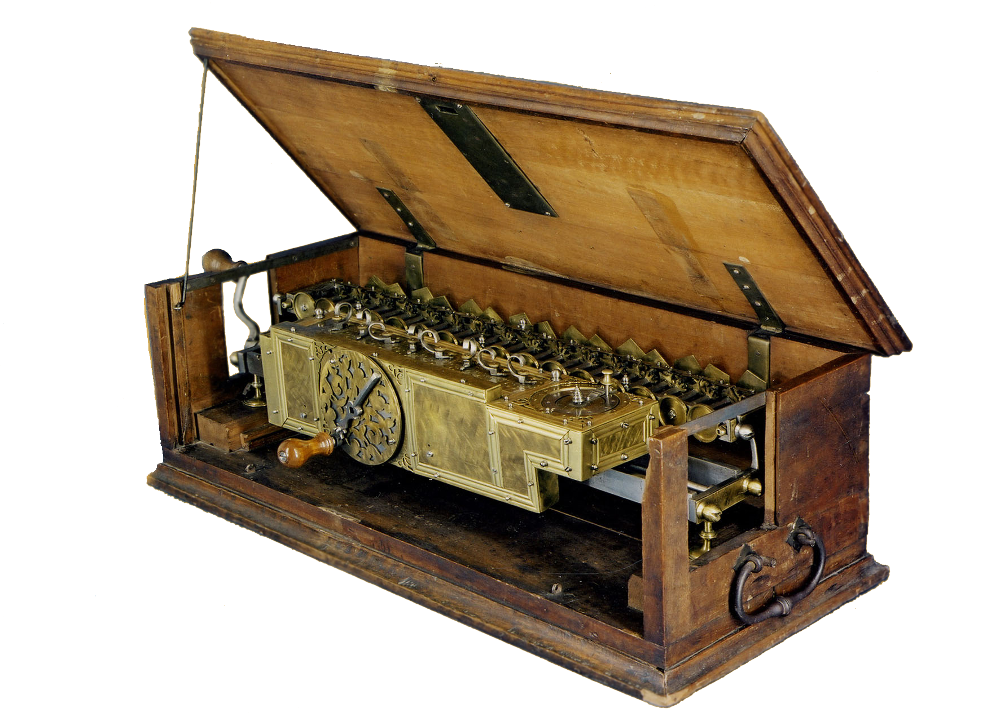
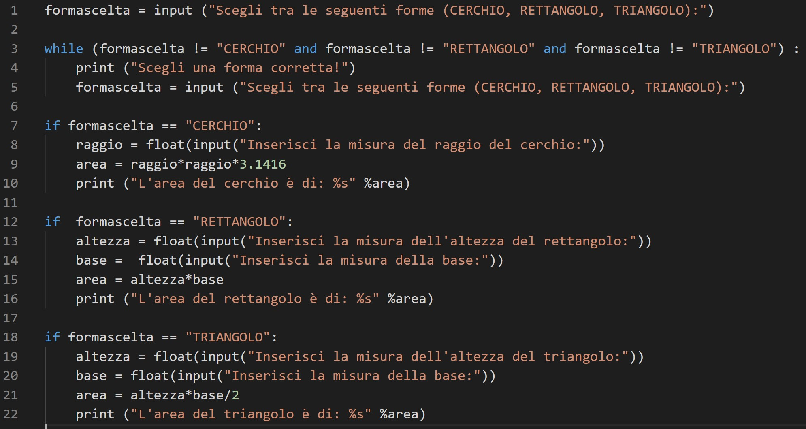
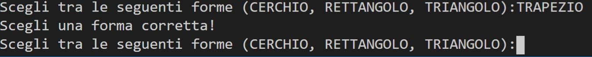
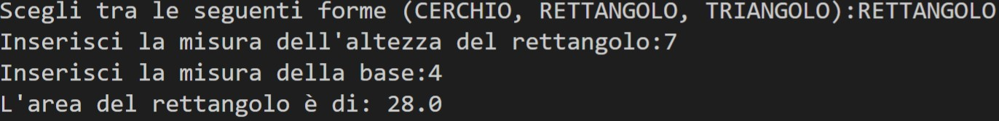
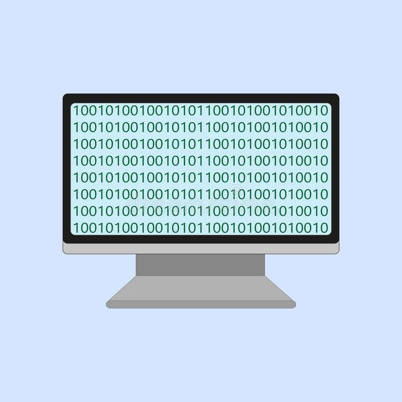
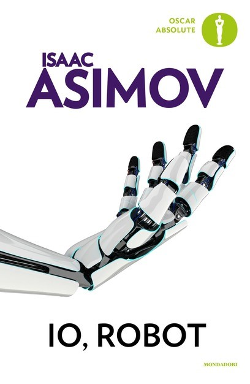
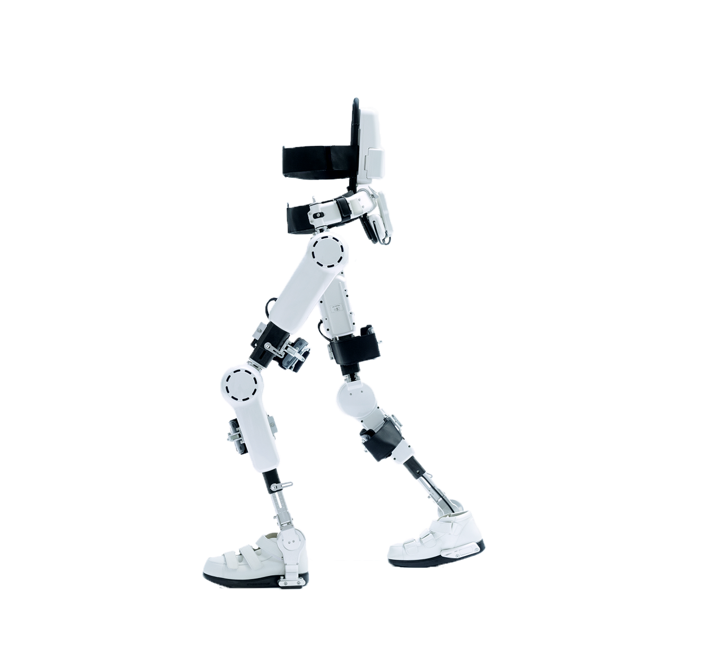

Christian Cristini
3'F
Un computer è una macchina automatizzata elettronica e programmabile in grado di eseguire sia complessi calcoli matematici sia altri tipi di elaborazione dati ed è capace di ricevere, trasmettere, immagazzinare informazioni, risolvendo i più svariati problemi con estrema velocità ed affidabilità.
I computer, per funzionare correttamente, devono essere anche composti da delle periferiche sia input che output, in modo che una persona riesca a impartirgli i comandi che desidera. Degli esempi molto comuni sono le tastiere e i mouse (in modo che ci si possa interagire), un monitor (serve a vedere quello che ci si sta facendo), delle cuffie o casse (per ascoltare musica o video), un microfono (per riuscire a registrare suoni) e una webcam (che serve per esempio per farsi vedere dalle persone che si stanno videochiamando).
Molte di queste cose, sono già incluse nei Laptop (computer portatili). A un computer per funzionare non serve solo la parte elettronica e meccanica, cioè l’hardware, ma anche una mente che gli permetta di funzionare, cioè il software, in poche parole. Il software è costituito da molte serie di programmi, ed un programma è una serie di istruzioni che vengono create da persone specializzate chiamate programmatori. L’hardaware, invece, come già detto è tutta la parte fisica e meccanica del PC ed anche quella che ne definisce le caratteristiche. È composto da molti componenti, tra cui quello più importante di tutti è la scheda madre che è dotata di circuiti integrati che hanno il compito di collegare fra loro le altre componenti del sistema.
Alloggiati sulla scheda madre si trovano il processore, la memoria RAM (che contiene tutta la
memoria che ci
andiamo a mettere noi ed è l'acronimo di Random Access Memory ovvero memoria ad accesso casuale), l'insieme
di unità di memoria ROM (la memoria che serve al computer per
compiere
determinate azioni ed è l'acronimo di Read Only Memory, ovvero, memoria a sola lettura) che contengono il
BIOS (il primo programma che viene eseguito dopo l'accensione
per
avviare
il computer), le schede video o grafiche e di rete(le schede video servono per visualizzare le immagini sul
monitor; ne esistono
di molto potenti, che oggi vengono usate anche nell'ambito del gaming).
Esistono vari tipi di computer, e ognuno è più portato per fare determinate azioni, oppure solo
quelle
per
cui sono stati creati. Esistono molti esempi, tra questi ci sono quelli per giocare (Xbox e
Playstation) o
cucinare, quelli normali che vengono detti "fissi", e anche i Personal Computer(PC) le cui dimensioni,
prestazioni e prezzo di acquisto
lo
rendono
adatto alle esigenze del singolo individuo, oppure gli smartphone che sono stati inventati nel 2007
dalla
società Apple, e si sono rivelati un’invenzione rivoluzionaria che ha cambiato il mondo.
Enigma era una macchina per cifrare e decifrare messaggi. La sua facilità d'uso e la presunta indecifrabilità furono le maggiori ragioni del suo ampio utilizzo. Aveva l'aspetto di una macchina da scrivere con due tastiere: la prima, inferiore, e la seconda, nella quale i tasti si illuminavano ogni qualvolta venisse premuto un tasto sulla tastiera normale; la sequenza delle lettere che si illuminavano dava il messaggio cifrato. Fu inventata dal tedesco Arthur Scherbius nel 1918. Dopo che i tedeschi scoprirono che le loro comunicazioni navali della prima guerra mondiale erano state decriptate dal Regno Unito, pensarono che fosse arrivata l'ora di affidarsi a un sistema sicuro per criptare le proprie comunicazioni. Quindi il suo ideatore costruì una versione differente dalla precedente per impedire una decodifica dei messaggi nel caso che qualcuna delle sue macchine fosse caduta in mani nemiche. Nel 1929 il dispositivo venne acquisito dall'Esercito e da allora in poi venne utilizzato per ogni organizzazione militare tedesca e dalla maggior parte della gerarchia nazista.
Nel 1931, un impiegato tedesco che poteva accedere alla macchina Enigma militare, aveva fornito ai
francesi due
documenti tedeschi, che insieme ad altre informazioni raccolte dai loro servizi segreti, erano utili
per
cercare di
ricostruire
Enigma.
La Polonia, invece, sapeva che se la Germania avesse cominciato una guerra, essa sarebbe stata la
prima
ad essere
attaccata, e chiese alla Francia i progetti e tutto ciò che era stato recuperato per la
realizzazione di
un
prototipo per provare a violare il codice.
Così la polonia riuscì a progettare una macchina, che riusciva a decifrare, ovviamente con
molte
procedure più lente, i messaggi tedeschi.
Però, i nazisti cambiarono il funzionamento di Enigma con delle modifiche, che rendevano la macchina
polacca
inutile, perché un tale incremento di complessità gli avrebbe fatto spendere molti mesi in un unico
messaggio,
quindi rendendola inutile. Quando nel 1939
la polonia venne
invasa, il progetto venne trasferito agli inglesi i quali organizzarono un'attività di
intercettazione e
decifrazione su vasta scala delle comunicazioni radio tedesche a Bletchley Park e con l'aiuto di
molti
matematici, riprogettarono la "Bomba polacca" e idearono metodi diversi per forzare le chiavi di
codifica
tedesche, che
davano come prodotto il testo in chiaro, questo progetto era noto con il nome in codice “Ultra”.
Costruirono la "Bomba" o
"Colossus", che è
stato
il primo computer elettronico programmabile nella storia dell'informatica che fu costruito, come già
detto,
grazie ai progetti polacchi. Riusciva a decifrare circa 3.000 messaggi tedeschi al giorno. I
risultati
furono
importanti, tanto che negli anni successivi si continuò a migliorare l'apparato e a costruirne di
nuovi,
fino ad
avere ben 211 macchine operative con circa 2.000 tecnici che le assistevano. Alla fine della guerra
le
macchine
furono distrutte e i progetti relativi bruciati, per ordine del governo inglese. A questo progetto
ci
lavorò
anche un famoso matematico, Alan Turing, dove
ebbe un compito importantissimo, quello di decifrare Enigma. Lavorò sempre presso Bletchley Park, il
principale
centro di crittoanalisi del Regno Unito, dove ideò una serie di tecniche per violare i cifrari
tedeschi.
Finita
la guerra il governo britannico impose a tutti coloro che avevano lavorato alla decrittazione il
silenzio
assoluto, con questo silenzio non ricevettero nemmeno i dovuti riconoscimenti. Però nel 1974 dati e
informazioni
su queste attività cominciarono a essere pubblicate quando Alan Turing e molti suoi colleghi erano
già
morti da
tempo.
La criptografia è un metodo per rendere i messaggi non comprensibili a persone da cui non si vuole
li
traducano.
La necessità di nascondere messaggi strategici da occhi nemici è molto antica. La storia della
crittografia
moderna inizia con la stesura del De cifris di Leon Battista Alberti pubblicato nel 1568 che parlava
appunto di
questa disciplina.
Nella storia ci sono anche altri esempi di metodi per cifrare i messaggi, uno di questi esempi ci
viene
addirittura dall’antica Roma, il Cifrario di Cesare.
Questo esempio di criptografia è uno dei più antichi di cui si abbia traccia, questi tipi di cifrari
sono detti
anche cifrari a sostituzione o cifrari a scorrimento a causa del loro modo di operare: la
sostituzione
avviene
lettera per lettera, scorrendo il testo dall'inizio alla fine. Il suo nome viene da quello di Giulio
Cesare, che
lo usava, ovviamente, per proteggere i messaggi che mandava.
Al tempo era un metodo sicuro, perché i nemici dei romani, spesso non sapevano addirittura leggere
un
testo,
non di
meno uno cifrato. Cesare utilizzava uno spostamento di 3 posizioni.

Alan Turing è nato nel 1912 a Londra, è stato un matematico, logico, crittografo e filosofo
britannico ed è anche considerato uno dei padri dell’informatica.
Nel 1931 dopo aver ricevuto il diploma viene ammesso al King’s College di Cambridge dove
finalmente può
dedicarsi allo studio della meccanica quantistica, della logica e della teoria della
probabilità.
Studio che lo porterà a comprendere quello che Gödel formulerà nei
suoi “Teoremi
d’incompletezza” ( i teoremi d’incompletezza sono due famosi teoremi dimostrati da Kurt Gödel e
che fanno parte dei teoremi limitativi, che precisano le proprietà dei sistemi formali,
definizione
rigorosa del concetto di dimostrazione), un’intuizione vertiginosa che mette in crisi le
tradizionali
convinzioni sulla razionalità della matematica.
Alla luce di questa scoperta, il compito che Turing si assume è verificare l’esistenza di un
modo per
determinare a priori se un teorema sia esatto o meno; da queste riflessioni nasce quella che
sarà definita la
“Macchina di Turing” o "Bomba", di fatto il prototipo del primo computer.
Inventò anche un noto test, il “Test di Turing”, che consiste nel far dialogare una persona
chiusa in una stanza
con un interlocutore umano e con una macchina; nel caso in cui non si riesca a distinguere
l’uomo dalla
macchina, secondo Turing si può legittimamente affermare di essere in presenza di una “macchina
intelligente”.
Però ci dobbiamo anche chiedere come queste macchine possano funzionare, più precisamente con
quale linguaggio
lavorano.
La maggior parte delle persone esegue i calcoli in base al sistema decimale nel quale ha a
disposizione 10 cifre da 0 a 9 per posizione.
I numeri più grandi sono rappresentati con una nuova posizione.
Il sistema binario funziona in maniera molto diversa.
Qui però, abbiamo a disposizione soltanto due cifre: 0 e 1.
Anche in questo caso i numeri più grandi sono rappresentati con posizioni diverse.
La base di questo sistema numerico binario è stato inventato dal tedesco Gottfried Leibniz
che prevedeva
l’utilizzo di questi 2 nuovi caratteri.

Lo sviluppò ricercando un metodo che trasformasse i concetti linguistici della logica (vero
e falso, acceso e
spento) in un sistema matematico. In informatica e telecomunicazioni, i codici binari
vengono utilizzati per
vari metodi di codifica dati, come stringhe di caratteri, in stringhe di bit. Nel XX secolo
infine si sviluppò
la tecnica digitale e furono prodotti i primi calcolatori elettronici che lo utilizzavano.
Tutti i linguaggi di programmazione che utilizziamo ogni giorno sono "ad alto
livello"(linguaggio interpretato):
significa che essi estraggono i dettagli del funzionamento di un elaboratore informatico e
sono lontani dalle
caratteristiche del "linguaggio macchina". Il Fortran fu il linguaggio che per primo, negli
anni '50, permise di
tradurre logiche più vicine al modo di pensare umano in quelle proprie del linguaggio
macchina.
Il vantaggio derivante dai linguaggi di alto livello è che essi sono più intuitivi da usare,
adottano una
sintassi e uno specifico insieme di regole, il codice può essere generalmente compilato su
più architetture
diverse ed è quindi possibile ottenere il codice macchina senza dover riscrivere quello ad
alto livello, però
sono più lenti rispetto al linguaggio compilato(0 e 1).
Alcuni esempi di programmi interpretati molto utilizzati sono Python, Flatter e
Java.
Il codice binario è quindi utilizzato al livello più basso da tutti i sistemi informatici
adoperati perché sono
previsti solo 2 stati, tale linguaggio viene utilizzato per
definire le istruzioni
elementari.

Questo programma visibile qua sopra, è stato costruito con Python, è molto semplice ma può
già calcolare le aree
di 3 forme geometriche: cerchio, rettangolo e il triangolo,
come si può vedere nella prima riga, sono state associate alla parola formascelta, se la
forma scelta è diversa
dalle 3 figure che sono andato a mettere, uscirà un testo con scritto di scegliere una forma
corretta.
Il resto dei comandi sotto, serve per il calcolo delle aree.


I sistemi informatici conoscono le unità bit e byte, un bit è una cifra del codice che può
corrispondere a un 1
o a uno 0. Un byte a sua volta corrisponde a 8 di questi bit.
Quando vogliamo eseguire un calcolo in numeri decimali vengono convertiti nel sistema
binario.
La traduzione del numero 5 è 00000101. Gli zeri all’inizio del numero binario non
influiscono sul
valore e assicurano soltanto che si mantenga un formato fisso di 8 cifre.

Esistono anche imitazioni dell’uomo create al computer, sono estremamente complesse e
avveniristiche, che hanno
preso posto nella storia dell’uomo.
Più in particolare si parla dell’intelligenza artificiale.
Alan Turing nel 1950, scrisse un articolo su una rivista dell’epoca in cui
descriveva il test di Turing, era convinto che si potesse raggiungere un'intelligenza
artificiale solo seguendo
gli schemi del cervello umano.
È una tecnologia informatica che rivoluziona il modo con cui l'uomo interagisce con la
macchina, e le macchine
tra di loro.
L'intelligenza artificiale fornisce ad un robot qualità di calcolo che gli permettono di
compiere operazioni e
"ragionamenti" complessi, fino a poco tempo fa caratteristiche esclusive del
ragionamento umano.
Grazie all'intelligenza artificiale è possibile rendere le macchine in grado di compiere
azioni e ragionamenti
complessi, imparare dagli errori, e svolgere funzioni fino ad oggi esclusive
dell'intelligenza umana.
La nascita di questa disciplina avvenne nel 1956 in un convegno di scienziati nel New
Hampshire, al Dartmouth
College, in seguito si cercò sempre di riuscire a crearne una, ma si rivelò essere più
difficile del previsto.
Solo al giorno d’oggi l’AI è presente in ogni campo, anche nelle attività quotidiane e
primeggiano nei giochi,
come teorizzato anni prima dagli esponenti dell’intelligenza artificiale.
Questa disciplina viene applicata anche per la costruzione di robot e androidi, come
quelli della
Boston Dynamics
, che riescono a correre su terreni accidentati e addirittura fare acrobazie, è
incredibile quanti passi
abbia fatto l’uomo fino al giorno d’oggi.
I robot, sono macchine simili o non a l’uomo che sono creati per eseguire un
numero di determinate azioni, per
aiutare l’uomo in vari lavori che richiedono sforzo fisico e anche il rischio di perdere
vite, come i pompieri,
si stanno infatti sviluppando dei robot che siano in grado di affrontare situazioni
pericolose, il più
efficentemente possibile e senza rischiare la perdita di uomini.
L’intelligenza artificiale e i robot, hanno anche affascinato e ispirato molti
scrittori del passato, che
ispirandosi alle nuove tecnologie hanno sviluppato libri molto interessanti, esempio fra
questi, Isaac Asimov.
Isaac Asimov, nato in Russia nel 1920, era uno scrittore di fantascienza, in un
documentario
dedicato a lui spiega che la fantascienza può essere quello che ci sarà in futuro,
infatti, in alcuni dei suoi
racconti esistono i robot positronici. Nel suo primo libro Io, robot (“I, robot” in
inglese) ha inventato le Tre
Leggi della robotica:
1 . Un robot non può recare danno a un essere umano, né permettere che, a causa
della sua negligenza un essere
umano patisca danno;
2 . Un robot deve sempre obbedire agli ordini degli esseri umani, a meno che
contrastino con la Prima Legge;
3 . Un robot deve proteggere la propria esistenza, purché questo non contrasti con
la Prima e la Seconda Legge.
Il romanzo è suddiviso in 5 capitoli diversi, che parlano di 5 storie diverse,
ambientate nel futuro, in cui
sono presenti queste macchine pensanti ritenute perfette, ma quando le Tre leggi
inizieranno ad andare in
contrasto e a mostrare falle, è lì che inizia il momento più atteso del romanzo.
Io l’ho ho letto e lo consiglio moltissimo, ed è anche molto interessante.

Ma non finisce così, esistono anche altri tipi di macchine, come per esempio quelle
per applicazione medica,
come gli esoscheletri, che possono aiutare le persone afflite da disabilità, tipo
quelle paralizzate per via di
incidenti di ogni genere, o per applicazioni lavorative o militari.
Gli esoscheletri sono
dispositivi di supporto per l’uomo,
che danno aiuto grazie a una forza meccanica. A seconda della loro costruzione e
dei loro componenti, gli
esoscheletri sono suddivisi in due gruppi, passivi e attivi.
Quelli passivi danno aiuto al corpo solo con delle componenti meccaniche, quali
molle, guide e pesi.
Quelli attivi, invece, oltre agli elementi meccanici sono dotati anche di altri
componenti di azionamento
attivi, che forniscono un ulteriore contributo alla riduzione della forza e
all'attenuazione del peso dei carichi.
A seconda dei modelli si utilizzano sensori, che informano gli attuatori
dell'esoscheletro già anticipatamente
riguardo ai movimenti successivi dell'uomo.
I modelli attivi offrono inoltre un’assistenza più elevata e sono in grado di
sgravare da chi li indossa da un
carico maggiore rispetto alle strutture di supporto passive.
Hanno anche modificato il profilo medico di molti totalmente paralizzati a
parzialmente, in quanto dopo una
lunga terapia con questi esoscheletri, sono riusciti a riacquistare il movimento di alcune parti del
corpo, come per esempio, alcune dita
dei piedi.
Possono possedere anche altri tipi di applicazioni, come quelle di tipo
militare.

I superconduttori sono particolari materiali che se, raggiungono determinate temperature, vedono bruscamente annullarsi la loro resistività elettrica. Si comportano come superconduttori circa 30 elementi e molte loro leghe e composti. Il fenomeno della superconduttività fu scoperto nel 1911 dal fisico tedesco Heike Kamerlingh Onnes, osservando che la resistività del mercurio, a valori prossimi a zero (circa 4 Kelvin, ovvero -269 Co ), si annullava bruscamente, anziché assestarsi su valori minimi. Però, raggiungere temperature così basse è tecnicamente molto difficile, quindi il fenomeno rimase a lungo una curiosità accademica. Per molti anni la temperatura critica più alta mai raggiunta rimase 23 Kelvin (-250 Co), per una lega di niobio. La superconduttività iniziò a destare interessi a partire dal 1986, quando alcuni fisici scoprirono che certi materiali a base di ossidi di rame, lantanidi e metalli alcalino-terrosi divenivano superconduttori a temperature di gran lunga superiori a quelle note fino ad allora. In ricerche successive furono sviluppati materiali con temperature critiche attorno a 90K (-183,15 Co), intorno alla temperatura dell'azoto liquido, un refrigerante assai meno costoso di quelli usati per raffreddare i superconduttori metallici. La principale applicazione di un superconduttore risiede nel fatto che esso non dissipa calore per effetto Joule, avendo resistività praticamente nulla. Con un cavo superconduttore è possibile quindi trasportare corrente anche a grandi distanze senza disperdere energia.
La Silicon Valley, si trova in California,
negli Stati Uniti, ed è il centro
globale dell’alta tecnologia, l'innovazione e i social media.
Infatti questo luogo ospita molte tra le più famose aziende del mondo,
tra cui Microsoft, Sony, Apple, Facebook,
Tesla, Ebay, Intel e la Nasa.
La silicon valley è stata fondata nel 9 settembre 1850.
Le prime 2 persone che ci fondarono un’azienda elettronica, in un
garage, sono Bill Hewlett e David Packard, nel
1939 e quella società è attualmente la famosissima HP.
{kind=link}
{kind=link}
{kind=link}
{kind=link}
{kind=link}
{kind=link}